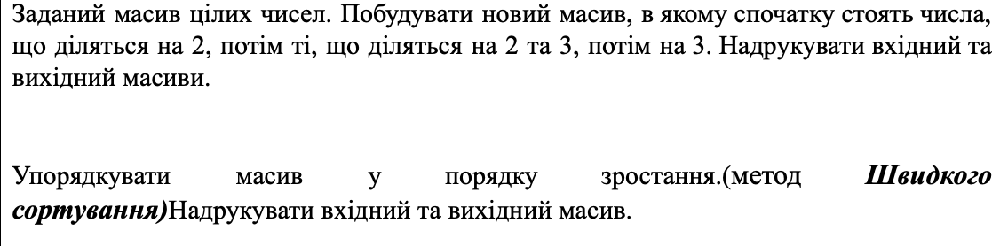
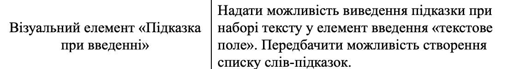
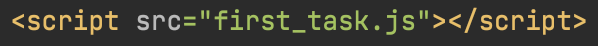
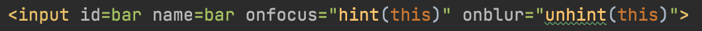
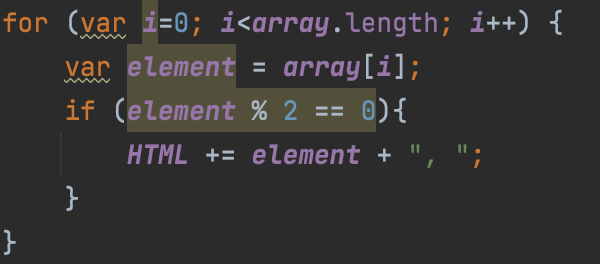
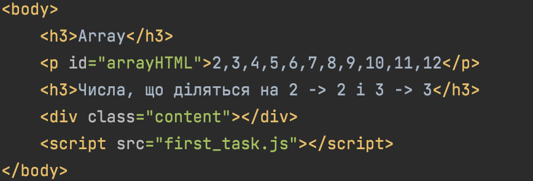
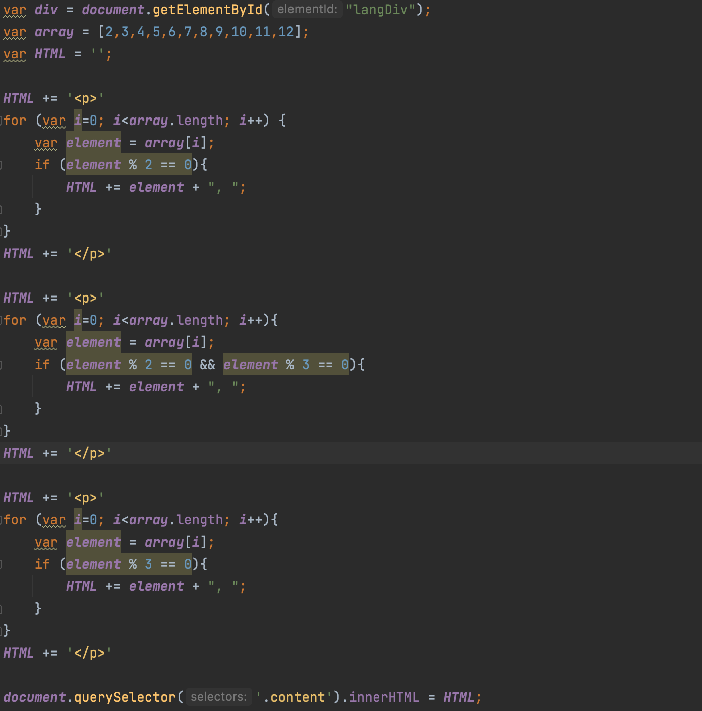
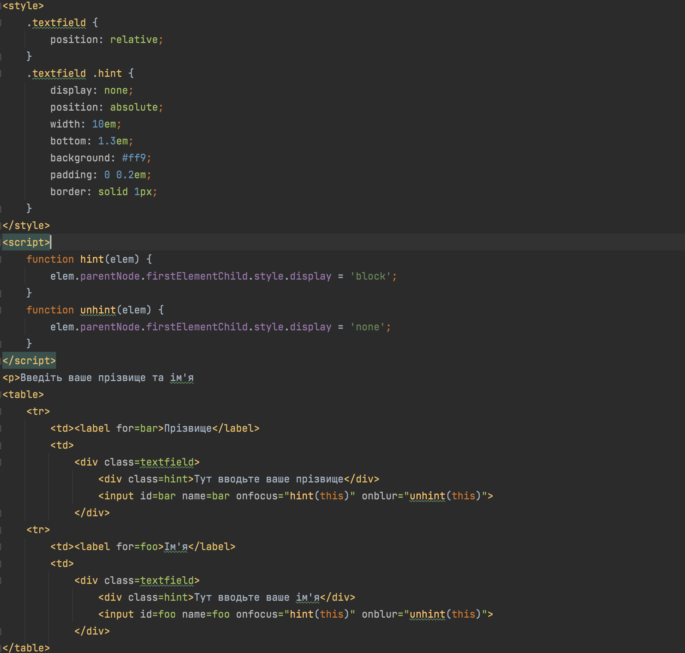

Тема,Мета,Місце розташування звіту,сайту
Тема: ФУНКЦІОНАЛЬНЕ ЗАСТОСУВАННЯ JAVASCRIPT У HTML-ДОКУМЕНТІ. КЛАСИ,ОБ’ЄКТИ, ФУНКЦІЇ, В МОВІ JAVASCRIPT. ПОДІЇ ТА ОБРОБКА ПОДІЙ.ПРОГРАМНА ВЗАЄМОДІЯ З HTML ДОКУМЕНТАМИ НА ОСНОВІ DOM АРІ
Мета: придбати практичні навички роботи маніпулювання інформаційним вмістом Web-документа засобами мови Javasсript, використання об’єктів,масивів, функцій, подій, обробників подій у сценаріях на мові JavaScript
Розташування: https://github.com/Twinkletoes3/web_lab_br7
Постановка задачі Лабораторної роботи №4


Способи функціонального застосування JavaScript
- Схема URL

- Обробник подій

- Вставка

Масиви(виконання пункту №4)


Виконання пункту №6

Висновок
Під час данної лабораторної роботи ми ознайомилися з JavaScript та дізналися що таке функціональне застосування JavaScript у HTML-документі.